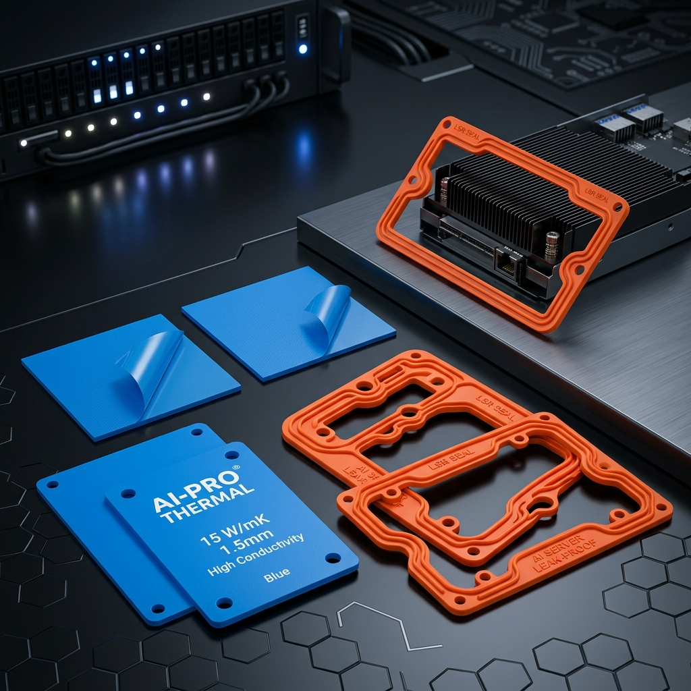
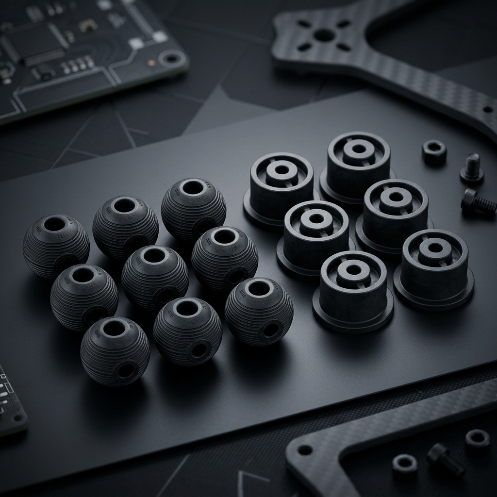

在人工智慧 (AI) 伺服器與無人載具 (UAV) 系統中，硬體架構的可靠性是演算法能穩定發揮的底氣。面對高壓、高熱、動態震動、電磁波干擾 (EMI) 及全天候嚴酷環境，精密矽膠與橡膠元件提供了完美的解決方案。以下為兩大高成長硬體市場的深度應用分析與材料設計要點：
一、 AI 伺服器與高算力機櫃中的橡矽膠關鍵零件
AI 運算晶片（GPU/ASIC）在高負載下發熱量巨大，且高速運作的冷卻系統及風扇運作時產生的微震動會直接干擾高頻訊號傳輸。這對密封、導熱與防震提出了極高要求：
1. 超導熱介面材料 (Thermal Conductive Silicone, TIM)
GPU/CPU 晶片與散熱片、均溫板之間，需填充高熱導率的導熱矽膠片或導熱凝膠。透過精密配方在矽膠基材中填充氧化鋁、氮化硼或碳化矽等陶瓷微粒，在維持 Shore A 10°~25° 極佳彈性與間隙填充性能的同時，達到 3.0~8.0 W/m·K 以上的熱傳導效率，大幅降低晶片溫升。
2. 水冷/液冷系統防漏密封圈 (Liquid Cooling Gaskets)
液冷（CDU 水路、水冷板）正成為 AI 機櫃散熱主流。水冷接頭與冷卻板的密封圈需在長達數年的 80°C 高溫水汽環境中工作，對永久壓縮變形率（要求 < 10%）與耐化學降解（耐乙二醇水溶液）有極高要求。採用 LSR 液態矽膠射出成型 的 O型環與異形密封墊，是防堵伺服器內部液漏短路的唯一防線。

▲ 鈞翔精密生產的 AI 伺服器超導熱矽膠片與高氣密 LSR 密封圈
3. 導電橡膠電磁遮蔽蓋與絕緣墊圈 (EMI Shielding Gaskets)
AI 伺服器內部有著大量高頻通訊模組，電磁干擾 (EMI) 會顯著降低資料傳輸速率。我們透過在矽膠中混入鎳包石墨、銀包銅等導電顆粒，開發出具有共擠或壓出成型的電磁遮蔽導電橡膠條。這些零件既能防塵，又能阻絕高頻雜訊，電阻率可控制在 < 0.01 Ω·cm。
二、 無人機 (Drones) 對精密避震與耐候氣密零件的技術需求
專業級與工業級無人機（如農用植保、電力巡檢、防汛搜救）需在高空嚴寒、雨水沖刷與螺旋槳馬達高速共振環境中作業，對零件重量、抗震能效有著苛刻考驗：

▲ 鈞翔無人機雲台相機高阻尼避震球及馬達金屬接著接著件
1. 雲台相機高阻尼減震球 (Gimbal Dampening Balls)
旋翼旋轉時產生的 50Hz~200Hz 高頻震動會使航拍畫面產生「果凍效應」（Jello Effect）。雲台減震球必須精準控制硬度（Shore A 30°~45°）與阻尼值（tan δ）。我們採用高撕裂強度、高彈性天然膠與矽膠複合配方，既有足夠剛性支撐相機重力，端能完美隔絕螺旋槳的微震動。
2. 馬達減震座與金屬接著接著件 (Motor Mount Dampers)
無人機馬達座是震動與溫升源頭。利用**橡膠與金屬接著技術（Rubber to Metal Bonding）**將鋁合金與特製丁腈橡膠（NBR）在模具內共價結合，免去二次裝配，不僅具備高拉拔力強度，亦能阻隔馬達震動往機架（碳纖維板）傳遞，保護陀螺儀晶片不受干擾。
3. 起落架緩衝腳墊 (Landing Gear Shock Absorbers)
選用高耐磨、耐撕裂的丁腈橡膠 (NBR) 或聚氨酯 (PU) 製造起落架緩衝墊，吸收重載無人機降落時的瞬間物理衝擊，避免機身碳纖維結構微損龜裂。
4. 動力舵機與擺臂防水防塵套 (Servo Dust Boots)
在垂直起降（VTOL）傾轉旋翼無人機的傾轉轉軸、舵機連桿處，使用極薄壁（0.3mm~0.5mm）的波紋狀矽橡膠防塵套筒。高強度的矽膠能在阻擋農藥噴灑、沙塵及雨水的同時，確保不阻礙舵機的極致轉向回饋彈力。
5. 外殼 IP67/IP68 防水圈與 LSR 雙色包膠 (Overmolding)
為實現大雨中執勤，機殼與電池艙門的交接面必須實現完美防水。LSR 雙色射出技術將液態矽膠直接包覆在硬質 PC/PA 塑膠框架上，無組裝公差，且在 -40°C ~ 85°C 極端環境中不會有脫膠、龜裂、老化漏水的風險。
AI 伺服器與無人機零組件規格設計對照表：
| 核心零件 | 推薦材質 | 核心規格指引 | 關鍵加工製程 |
|---|---|---|---|
| 晶片導熱片 | 陶瓷粉填充矽膠 | 導熱率 3~8 W/m·K、Shore A 15° | 混煉壓出 / 沖切加工 |
| 液冷系統密封件 | LSR 液態矽膠 | 壓縮變形 < 10%、耐冷卻液 | 高精度 LSR 自動射出 |
| 雲台相機避震球 | 高撕裂矽橡膠 | 高阻尼（tan δ）、Shore A 35° | 真空抽氣熱壓 / LSR 射出 |
| 無人機外殼防水 | LSR 矽膠 + PC/PA | IP68防水、剪切強度 > 4.0 MPa | LSR 雙色二次包膠 (Overmolding) |
三、 鈞翔實業 — 您的前沿硬體量產最佳合作夥伴
多數 AI 與無人機專案的精密矽膠件均為非標客製化零件。鈞翔實業有限公司擁有 30 年以上模具研製與材料改性研發技術，在新北新莊廠區設有高精度模具加工廠與自動化 LSR 射出設備。我們能針對客戶的高散熱、高阻尼減震或極端氣候防水需求，進行 NRE 客製化模具開發，提供極具競爭力的打樣與高良率量產代工服務。歡迎各界提供 3D 圖檔（STEP/IGS）或樣品，與我們的技術團隊進行深度探討。